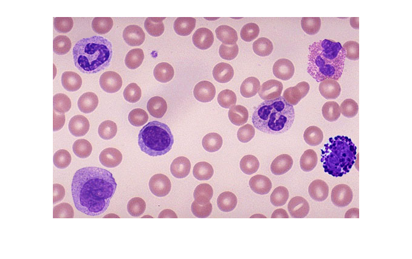
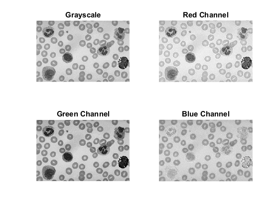
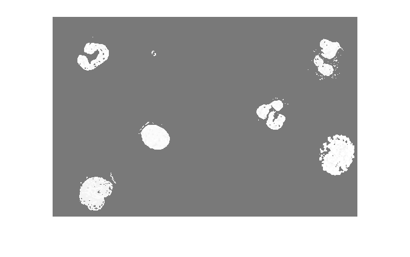
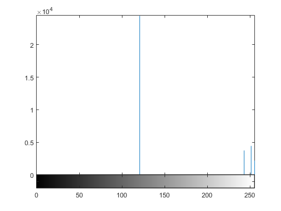
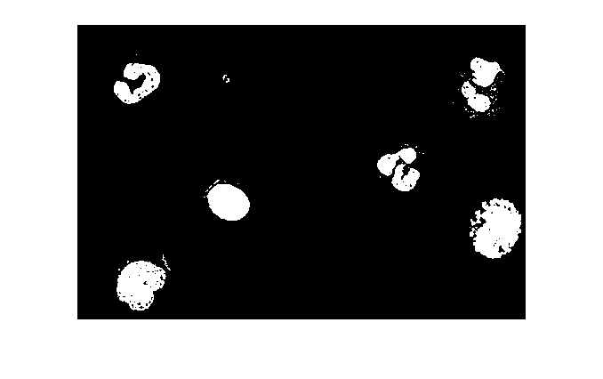
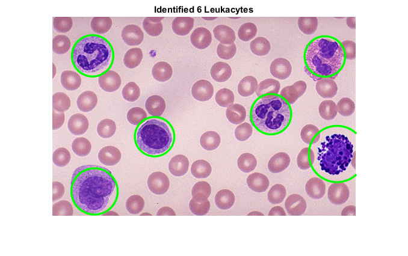
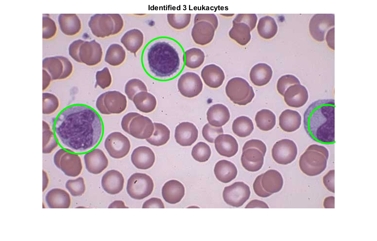
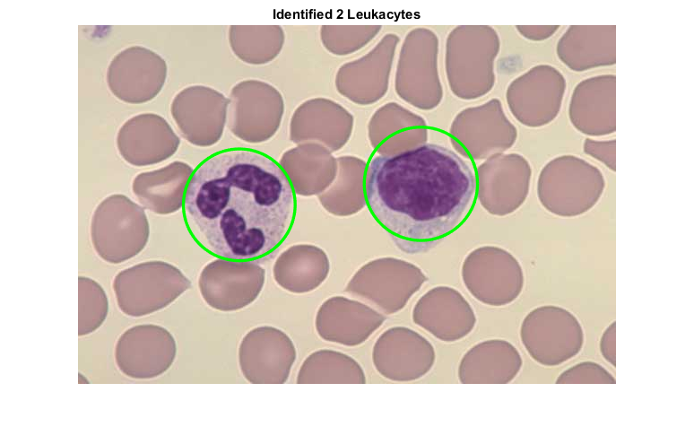
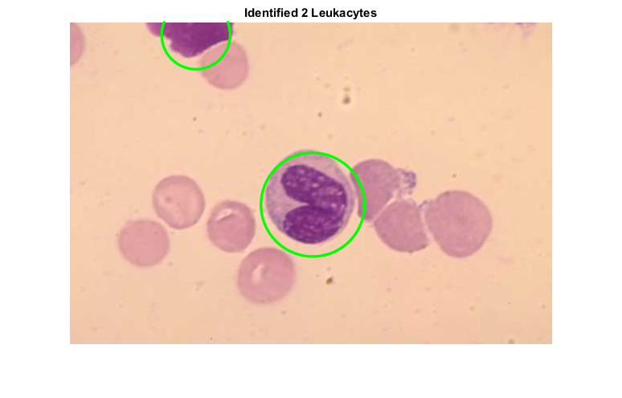
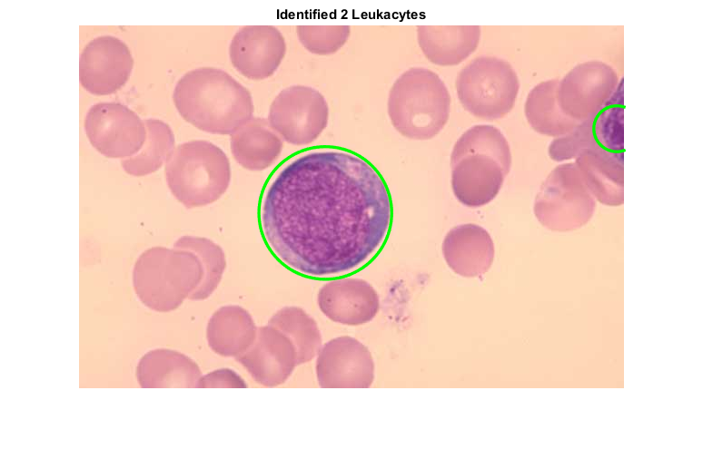

Leukocyte Identification
Leukocyte (White Blood Cell) Identification MATLAB scripts
ECSE 4540 - Introduction to Image Processing Final Project Mitchell Phillips, 661060944
Last Updated: April 2, 2017
Contents
Notes
Currently in development. Using single image to perform preliminary identification algorithums.
clc, clear, close all; warning off; % import image(s) addpath(genpath('images/')); % edit as needed
test001.jpg
Preliminary Analysis
% import test image im = imread('test001.jpg'); % display test image figure(1); imshow(im);
Figure 1 was the test image for identifying Leukocytes. In the image, there are 6 large purple blobs. These are the white blood cells; however, not all of these cells are the same. There are five different types of white blood cells, each of which can be distinguished based on their appearance: (1.) Neutrophils, (2.) Lymphocytes, (3.) Monocytes, (4.) Eosinophils, and (5.) Basophils. (Note: each type is indicated on the figure above.) Neutrophils can be identified by their pinched-in nucleus (darker purple region) which may have a horseshoe-like appearence. Lymphocytes contain a large, generally round and uniform nuclues. Monocytes are distinguish from their large nuclues, similar to that of Lymphocytes, except they contain more cytoplasm (the light purple surounding the nucleus. Eosinphils are similar to Neutrophils in appearance, with large granules (small dark purple dots) in the cytoplasm. Basophils are the easiest to distinguish as they are characterized by large, dark purple granules. These five types of Leukocytes can be split into two distinct groups based on the granules;
1.) Granulocytes - Basophil, Eosinophil, and Neutrophil
2.) Agranulocytes - Lymphocytes and Monocytes
Reference: [1]
After inital viewing of the test image, the grayscale and each of the RGB channels were investigated.
imgray = rgb2gray(im); % grayscale image R = im(:,:,1); % red channel G = im(:,:,2); % green channel B = im(:,:,3); % blue channel figure(2) subplot(2,2,1), imshow(imgray) title('Grayscale') subplot(2,2,2), imshow(R) title('Red Channel') subplot(2,2,3), imshow(G) title('Green Channel') subplot(2,2,4), imshow(B) title('Blue Channel')
Figure 2 contains the grayscale, red, green, and blue channels, of the image shown in figure 1. It is observered that the in the test image, the Leukocytes contain large intensities in the blue channel, however that is true of most of the image. This is indicated by the fact that the majority of the image is made up of lighter shades. Conversely, in the greyscale, red, and green channels, the Leukocytes are characterized by lower intensity values. The intensitivity behavior can be attributed to violet color of the Leukocytes from the original image. It is noted that the dark characterization however is only true for the nucleui, not the cytoplasm.
Using a similar process as Prinyakupt and Pluempitiwiriyawej [2], nucleus segmentation was first performed by averaging the red and blue channel intensites. This was done because the the green channel contains the lowest pixel intensities of the nuclues (as indicated in figure 2). Results are shown below,
nucl = histeq((R+B)./(2.*G)); figure(3); imshow(nucl)
Figure 3 is the histogram equalized image of figure 1. Based on the image above, the nucleui of each of the Leukocytes can be distinguished. This was perform by first inspecting the histogram levels after equalization, thresholding the image appropriatly, and applying morphalogical transformations to fill in any gaps that may occur.
figure(4); imhist(nucl);
Figure 4 is the histogram corresponding to figure 3. Based on the obtained values, a threshold of pixel intensity of 150 will be used. Results are shown below.
level = 150; nuclBW = nucl > level; figure(5); imshow(nuclBW);
Figure 5 is the binary image from figure 3 after thresholding. From inspection, all 6 Leukocytes remain. However, there are several holes and undesired elements in the figure. To improve the image and accomadate the identification algorithum, the morphalogical transformations were performed.
sqOpen = strel('disk',2); nuclMorph = imopen(nuclBW,sqOpen); sqClose = strel('disk',3); nuclMorph = imclose(nuclMorph,sqClose); figure(6); imshow(nuclMorph);
Figure 6 is the morphologoical processed image to remove both any unwanted small objects as well as remove any small holes from the nucleui, hence both the opening and closeing processes. Using the binary image from figure 6, the Leukocytes can be identified using the nucleui. This is demomstrated below using the created function wbcNuclei.m
wbcNuclei(im, 7)
Figure 7 is the original image with any Leukocytes marked and identified. Using these results, the entire process of splitting the color channels averaging the levels, histogram equalization, thresholding, and morphological processing was placed into a single function, wbcNuclei.m that can detect Leukocytes based on the nuclei stain.
The effectivness of wbcNuclei.m for Leukocyte identification is demonstrated below using a series of images. Each test image was inspected aftwards to evaluate if all Leukocytes have been accounted for.
imN1 = imread('4303059.jpg'); wbcNuclei(imN1, 8); imN2 = imread('4303041.jpg'); wbcNuclei(imN2, 9); imN3 = imread('4303101.jpg'); wbcNuclei(imN3, 10); imN4 = imread('4304032.jpg'); wbcNuclei(imN4, 11);   
Figures 8 through 11 demonstrate the capabilities of the created wbcNuclei.m function. Based on the above results, it is observed that the identification works well for most images. However, the identification in figure 11 is rather poor. From inspection, it is clear that there is one Leukocyte in the center of the image with another cut off on the right-hand side. Results over estimated the number of leukocytes. Errors in figure 11 were investigated further.
wbcNuclei(imN4, 12);
After debugging the function, it was determined to increase the morphological structuring element size for closing the image from 3 to 15. Doing so increased the size of any holes that may form in the binary image, causing inaccuracies when counting.
References
[1]: http://www.pathologystudent.com/?p=4776
[2]: https://www.ncbi.nlm.nih.gov/pmc/articles/PMC4485641/pdf/12938_2015_Article_37.pdf